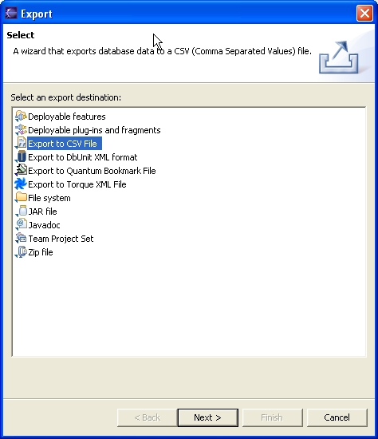
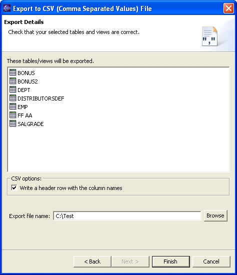
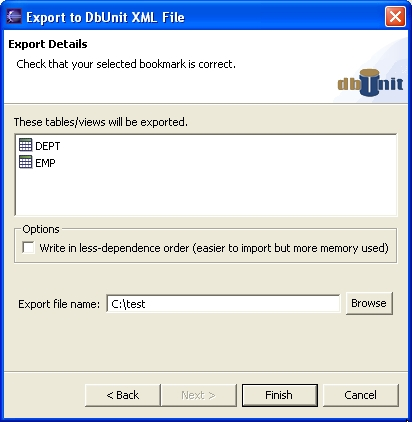

Quantum enables you to export the structure and the data from a database in different formats. That's a relatively new feature, and it may be considered work in progress. The export dialog looks like this:

The export options that Quantum adds are the ones that start with "Export". We were slow to realize that it was obvious that it was an export, as they stand in the Export dialog, so now it'll probably remain like that forever. It adds a nice grouping, though.
This option allows you to export data from tables and/or views to a Comma Separated Values (CSV) file. The CSV format is not exactly a industry standard, as there are many variants of it, but is easy, usually readable, and can be imported by a wide variety of tools (that is, Excel).
To export to CSV you select a number of tables and/or views, select Export, and then Export to CSV file. The following dialog should appear:

You have the option to select if the export will write a first row with the names of the columns, or not. Then select the file name and that's all.
The export operation will write a single .csv file if you selected a single table or view. If you select several, as in the previous image, it'll write a .zip file with all the .csv files inside. The .csv files will have the name of the table or view as name, and the .csv extension. At the moment, the user interface will be frozen till the export operation is completed. That's a known drawback for extended operations. An example of the generated format is:
DEPTNO,DNAME,LOC
10,ACCOUNTING,NEW YORK
20,"MANUFACTURING,I+D",DALLAS
30,SALE,CHICAGO
33,,BOSTON
34,,
Please note that the CSV export is into a different plugin as the Quantum core. This plugin is called com.quantum.flatfiles. You don't need to install that plugin if you're not exporting to / importing from CSV files.
(From the DbUnit project page (http://dbunit.sourceforge.net/)
DbUnit is a JUnit extension (also usable with Ant) targeted for database-driven projects that, among other things, puts your database into a known state between test runs. This is an excellent way to avoid the myriad of problems that can occur when one test case corrupts the database and causes subsequent tests to fail or exacerbate the damage.
DbUnit has the ability to export and import your database data to and from XML datasets. Since version 2.0, DbUnit can works with very large dataset when use in streaming mode. DbUnit can also helps you to verify that your database data match expected set of values.
The Quantum exporter allows you to generate an XML file from selected tables and views, in the dbUnit format. Then tests can be run on the database. The exported XML file allows you to put the database back into a known state. Of course such tests are better done automatically, using the dbunit library, but for some applications, this GUI option can be useful.
The working is similar to the CSV Export.

The DbUnit Export will only generate a single file, in XML format, with .xml extension, copying all the selected tables/views in that file, using different <dataset> tags. An example of the format (using only one table) is as follows:
<?xml version='1.0' encoding='UTF-8'?>
<dataset>
<DEPT DEPTNO="10" DNAME="ACCOUNTING" LOC="NEW YORK"/>
<DEPT DEPTNO="20" DNAME="MANUFACTURING" LOC="DALLAS"/>
<DEPT DEPTNO="30" DNAME="SALE" LOC="CHICAGO"/>
<DEPT DEPTNO="33" DNAME="MANAG" LOC="BOSTON"/>
<DEPT DEPTNO="34"/>
</dataset>
The only available option: Write in less-dependence order, changes the ordering of the exported tables in the XML file, so that when importing, there is less problems with the relationships, if any. For example, if the table EMPLOYEE depends on the table DEPT, the table DEPT will be exported first. In that way, when importing, the DEPT rows are already there and you get no errors from you database about missing rows in the DEPT table.
The dbunit export resides in an independent plugin com.quentum.dbunit. It contains the library for dbunit in its dbunit.jar file. If you are not using dbunit export you can delete this plugin.
This option allows you to export the bookmarks you want to an xml file, that can later be imported by Quantum, and the bookmarks added to your bookmark view. It's equivalent to the Export Bookmarks option in the toolbar menu of the Bookmark view. This export leads you to a dialog where you must select the bookmarks that you want to export. So you don't select them in the bookmark view, as in the previous Exports.
From the Torque project website (http://db.apache.org/torque/):
Torque is a persistence layer. Torque includes a generator to generate all the database resources required by your application and includes a runtime environment to run the generated classes.
<More Export to Torque documentation pending>
The generated XML files looks like this:
?xml version="1.0" ?>
<!DOCTYPE database SYSTEM "http://db.apache.org/torque/dtd/database_3_1.dtd">
<database name="TESTDB" defaultIdMethod="idbroker">
<table name="DEPT" >
<column name="DEPTNO" primaryKey="true" required="true"
type="DECIMAL" size="2" />
<column name="DNAME" required="false" type="VARCHAR"
size="14" />
<column name="LOC" required="false" type="VARCHAR"
size="13" />
</table>
</table>
<table name="EMP" >
<column name="EMPNO" primaryKey="true" required="true"
type="DECIMAL" size="4" />
<column name="ENAME" required="false" type="VARCHAR"
size="10" />
<column name="JOB" required="false" type="VARCHAR"
size="9" />
<column name="MGR" required="false" type="DECIMAL"
size="4" />
<column name="HIREDATE" required="false" type="TIMESTAMP"
/>
<column name="SAL" required="false" type="DECIMAL"
size="7,2" />
<column name="COMM" required="false" type="DECIMAL"
size="7,2" />
<column name="DEPTNO" required="false" type="DECIMAL"
size="2" />
<foreign-key foreignTable="DEPT">
<reference local="DEPTNO" foreign="DEPTNO" />
</foreign-key>
</table>
</database>